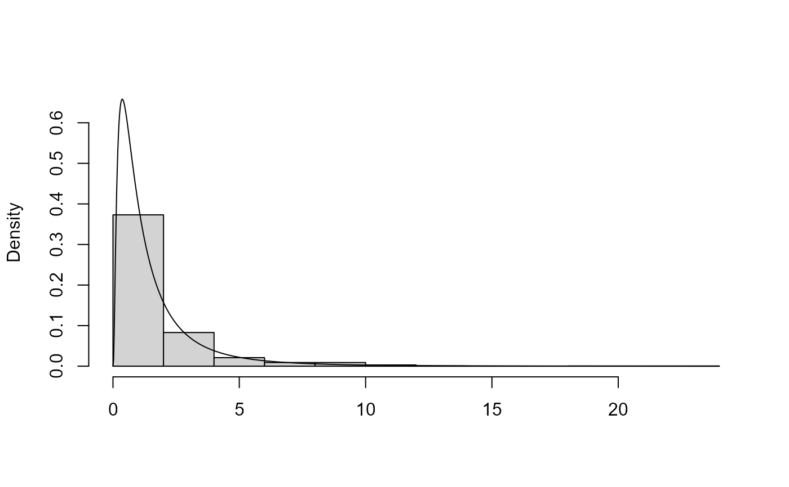

plot method for class "ru". For d = 1 a histogram of
the simulated values is plotted with a the density function superimposed.
The density is normalized crudely using the trapezium rule. For
d = 2 a scatter plot of the simulated values is produced with
density contours superimposed. For d > 2 pairwise plots of the
simulated values are produced.
Arguments
- x
an object of class
"ru", a result of a call toru.- y
Not used.
- ...
Additional arguments passed on to
hist,lines,contourorpoints.- n
A numeric scalar. Only relevant if
x$d = 1orx$d = 2. The meaning depends on the value of x$d.For d = 1 : n + 1 is the number of abscissae in the trapezium method used to normalize the density.
For d = 2 : an n by n regular grid is used to contour the density.
- prob
Numeric vector. Only relevant for
d = 2. The contour lines are drawn such that the respective probabilities that the variable lies within the contour are approximately equal to the values inprob.- ru_scale
A logical scalar. Should we plot data and density on the scale used in the ratio-of-uniforms algorithm (
TRUE) or on the original scale (FALSE)?- rows
A numeric scalar. When
d > 2this sets the number of rows of plots. If the user doesn't provide this then it is set internally.- xlabs, ylabs
Numeric vectors. When
d > 2these set the labels on the x and y axes respectively. If the user doesn't provide these then the column names of the simulated data matrix to be plotted are used.- var_names
A character (or numeric) vector of length
x$d. This argument can be used to replace variable names set usingvar_namesin the call toruorru_rcpp.- points_par
A list of arguments to pass to
pointsto control the appearance of points depicting the simulated values. Only relevant whend = 2.
See also
summary.ru for summaries of the simulated values
and properties of the ratio-of-uniforms algorithm.
Examples
# Log-normal density ----------------
x <- ru(logf = dlnorm, log = TRUE, d = 1, n = 1000, lower = 0, init = 1)
# \donttest{
plot(x)

# }
# Improve appearance using arguments to plot() and hist()
# \donttest{
plot(x, breaks = seq(0, ceiling(max(x$sim_vals)), by = 0.25),
xlim = c(0, 10))
 # }
# Two-dimensional normal with positive association ----------------
rho <- 0.9
covmat <- matrix(c(1, rho, rho, 1), 2, 2)
log_dmvnorm <- function(x, mean = rep(0, d), sigma = diag(d)) {
x <- matrix(x, ncol = length(x))
d <- ncol(x)
- 0.5 * (x - mean) %*% solve(sigma) %*% t(x - mean)
}
x <- ru(logf = log_dmvnorm, sigma = covmat, d = 2, n = 1000, init = c(0, 0))
# \donttest{
plot(x)
# }
# Two-dimensional normal with positive association ----------------
rho <- 0.9
covmat <- matrix(c(1, rho, rho, 1), 2, 2)
log_dmvnorm <- function(x, mean = rep(0, d), sigma = diag(d)) {
x <- matrix(x, ncol = length(x))
d <- ncol(x)
- 0.5 * (x - mean) %*% solve(sigma) %*% t(x - mean)
}
x <- ru(logf = log_dmvnorm, sigma = covmat, d = 2, n = 1000, init = c(0, 0))
# \donttest{
plot(x)
 # }
# }